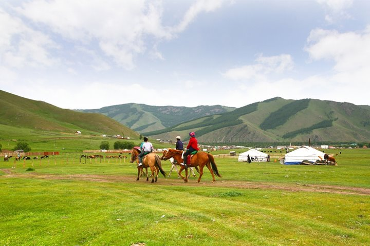
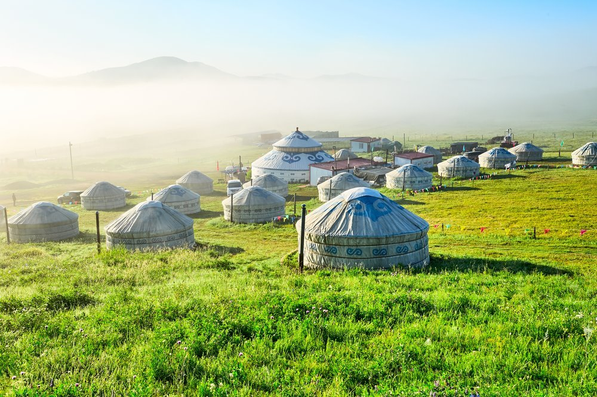

몽골 여행 팁
6~8월은 특히 평균 기온이 20도를 웃도는 쾌적한 날씨인데다가 소나기가 내려 초원에 생기가 도는 시기로 몽골 여행 최적의 시기입니다. 몽골 여행을 꿈꾸시는 분들은 이때 떠나는 것을 추천드려요.
몽골은 연평균 기온이 영하 2.9도일 정도로 일 년 내내 추운 날씨를 자랑하는 곳입니다. 또 일교차도 크기 때문에 여름에 여행을 가더라도 긴 옷, 두꺼운 옷은 필수로 챙겨가야 합니다. 게르에서 숙박하시는 분들에게 침낭은 필수입니다. 게르에 따라 위생상태가 제각각이고 지역에 따라 추운 곳도 있어 보온이 되는 침낭을 챙겨가는 것이 좋다고 하네요. 또 몽골은 비가 길게 내리지는 않지만 비가 올 때에는 엄청 쏟아져 내린다고 합니다. 그렇기 때문에 우비는 항상 휴대하는 것이 좋습니다.